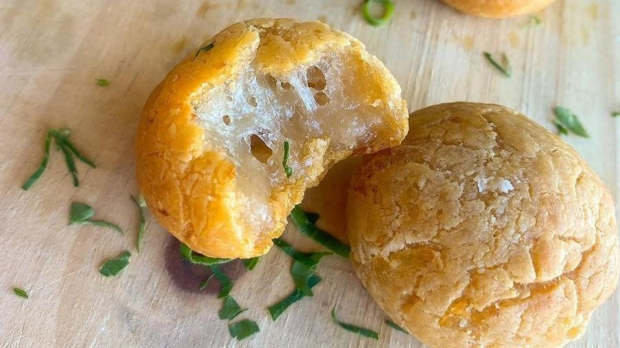

Reiceitas em Alta
Pão de queijo vegano de batata-salsa
Batata-salsa ou batata-inglesa rende pão de queijo vegano fácil de fazer e rapidinho. Aprenda passo a passo da receita.
ingredientes
- 2 xícaras(s) de chá de polvilho doce;
- 1 xícara(s) de chá de polvilho azedo;
- 1/3 xícara(s) de chá de óleo;
- 2 xícara(s) de chá de purê de batata-salsa (ou batata-inglesa;
- 1 xícara(s) de chá de água quente;
- Sal a gosto.
Modo de Preparo
Cozinhe, em água fervente, a batata-salsa já descascada. Guarde a água do cozimento. Amasse as batatas, até a consistência de uma massa tipo purê. Em um recipiente, misture o polvilho azedo e o doce, o óleo, o sal e a água do cozimento das batatas.
Misture bem - pode ser com as mãos mesmo. Se quiser, pode acrescente o tempero que gostar mais, usando a criatividade - como chia e linhaça, por exemplo.
Separe a massa em bolinhas, pequenas, para que assem uniformemente. Coloque em assadeira com uma boa distância entre elas. Preaqueça o forno em 180°C, coloque os pãezinhos e deixe-os assar por até 30 minutos.Receita da chef Renata Porto, especialista em gastronomia funcional.
Receitas Fitnees
Gravatinha com brócolis no vapor
Aprenda a fazer uma massa rápida, saudável e cheia de sabor com poucos ingredientes.
Ingredientes
Massa
- 1 cabeças de brócolis;
- 1 fio de azeite de oliva;
- 2 dentes de alho picados;
- Sal de ervas a gosto;
- 500 gramas de massa de sua preferência cozida (tire dois minutos antes para ficar "al dente").
Sal de ervas
- 4 colheres de sopa de sal;
- 4 colheres de sopa de ervas secas de sua preferência.
Modo de Preparo
Massa
Em um refratário de vidro, coloque um dedo de água, o brócolis dividido em floretes e leve ao micro-ondas por, aproximadamente, seis minutos, na potência alta ou até ficar macio.
Pegue uma frigideira, despeje um fio de azeite, o alho, o sal de ervas, o brócolis e a massa. Misture tudo até ficar homogêneo.
Sal de ervas
No liquidificador, bata as ervas secas e o sal para reduzir o sódio da sua alimentação. Reserve para usar na receita.
Receita da chef Renata Porto, especialista em gastronomia funcional.
Receitas de Bolos
Bolo de Castanha-do-Pará

Castanha-do-Pará ou do Brasil? O debate dá pano pra manga, e a castanha é base para um delicioso bolo. Veja passo a passo.
Ingredientes
- 5 ovos;
- 255 gramas de açúcar;
- Raspa de 1 limão;
- 1 colher de chá de canela em pó;
- 375 gramas de Castanha-do-Pará;
- 50 gramas de óleo de coco em estado liquido;
- 5 gramas de óleo de coco para untar;
- 10 gramas de fécula de batata para untar.
Modo de Preparo
Rale a castanha-do-Pará em um ralador super fino. Reserve. Na batedeira, junte os ovos e o açúcar e bata-os, em velocidade alta, por cerca de cinco minutos, ou até dobrar de volume.
Depois, acrescente as raspas de limão e a canela e bata por mais dois minutos. Com a batedeira ainda ligada, vá adicionando, aos poucos, as castanhas raladas. Junte o óleo de coco e bata somente para incorporar.
Em uma assadeira de 23 cm untada com óleo de coco e polvilhada com fécula de batata, despeje a massa e leve ao forno pré-aquecido a 180°C por cerca de 35 minutos. Para saber se está pronto, faça o teste do palito: insira-o no centro do bolo. Se o palito sair limpo, é porque o bolo está pronto.
Receita da chef Marilia Zylbersztajn, da Confeitaria Marilia Zylbersztajn.
Receitas Salgadas
Risoto de Bacalhau
Ingredientes
- 80 grama(s) de lombo de bacalhau assado no forno;
- 1 alho descascado;
- 2 colher(es) de sopa de azeite extra virgem;
- 80 grama(s) de arroz para risoto;
- 400 mililitro (ml) de caldo de legumes;
- 1 colher(es) de sopa de manteiga sem sal;
- 30 mililitro (ml) de vinho branco;
- 2 colher(es) de sopa de brócolis cozido;
- 2 colher(es) de sopa de queijo parmesão.
Modo de Preparo
Em uma panela, adicione a cebola e o azeite e deixe refogar. Adicionar o arroz e fritar um pouco. Quando o arroz estiver bem selado, adicionar vinho branco e caldo aos poucos até ficar "al dente". Para finalizar o risoto, fora do fogo, incorporar o parmesão e a manteiga.
Despejar em um prato fundo o risoto. Por cima, adicione brócolis e a posta de bacalhau. Coloque as azeitonas bem picadas por cima do bacalhau juntamente com a cebola frita.
Receita do chef Gabriel Marques, do Restaurante Nonna Rosa.